Request doc changes
Request doc changes Edit this page
Edit this page Learn how to contribute
Learn how to contributeRestore and recovery
Contributors
The following sections describe the restore and recovery workflows of three different scenarios and example configurations.
-
Automated restore and recovery:
-
Auto discovered HANA system SS1
-
SAP HANA single host, MDC single tenant system using NFS
-
-
Single-tenant restore and recovery:
-
Auto discovered HANA system SM1
-
SAP HANA single host, MDC multiple tenant system using NFS
-
-
Restore with manual recovery:
-
Manual configured HANA system SS2
-
SAP HANA single host, MDC multiple tenant system using NFS
-
In the following sections, the differences between SAP HANA single host and multiple hosts and Fibre Channel SAN attached HANA systems are highlighted.
The examples show SAP HANA Studio as a tool to execute manual recovery. You can also use SAP HANA Cockpit or HANA SQL statements.
Automated restore and recovery
With SnapCenter 4.3, automated restore and recovery operations are supported for HANA single container or MDC single tenant systems that have been auto discovered by SnapCenter.
You can execute an automated restore and recovery operation with the following steps:
-
Select the backup to be used for the restore operation. The backup can be selected from the following storage options:
-
Primary storage
-
Offsite backup storage (SnapVault target)
-
-
Select the restore type. Select Complete Restore with Volume Revert or without Volume Revert.

The Volume Revert option is only available for restore operations from primary storage and if the HANA database is using NFS as the storage protocol. -
Select the recovery type from the following options:
-
To most recent state
-
Point in time
-
To specific data backup
-
No recovery
The selected recovery type is used for the recovery of the system and the tenant database.
-
Next, SnapCenter performs the following operations:
-
It stops the HANA database.
-
It restores the database.
Depending on the selected restore type and the used storage protocol, different operations are executed.
-
If NFS and Volume Revert are selected, then SnapCenter unmounts the volume, restores the volume using volume-based SnapRestore on the storage layer, and mounts the volume.
-
If NFS is selected and Volume Revert is not selected, SnapCenter restores all files using single-file SnapRestore operations on the storage layer.
-
If Fibre Channel SAN is selected, then SnapCenter unmounts the LUN(s), restores the LUN(s) using single file SnapRestore operations on the storage layer, and discovers and mounts the LUN(s).
-
-
It recovers the database:
-
It recovers the system database.
-
It recovers the tenant database.
Or, for HANA single container systems, the recovery is executed in a single step:
-
It starts the HANA database.
-
|
|
If No Recovery is selected, SnapCenter exits and the recovery operation for the system and the tenant database must be done manually. |
This section provides the steps for the automated restore and recovery operation of the auto discovered HANA system SS1 (SAP HANA single host, MDC single tenant system using NFS).
-
Select a backup in SnapCenter to be used for the restore operation.
You can select restore from primary or from offsite backup storage. 

-
Select the restore scope and type.
The following three screenshots show the restore options for restore from primary with NFS, restore from secondary with NFS, and restore from primary with Fibre Channel SAN.
The restore type options for restore from primary storage.
The Volume Revert option is only available for restore operations from primary with NFS. 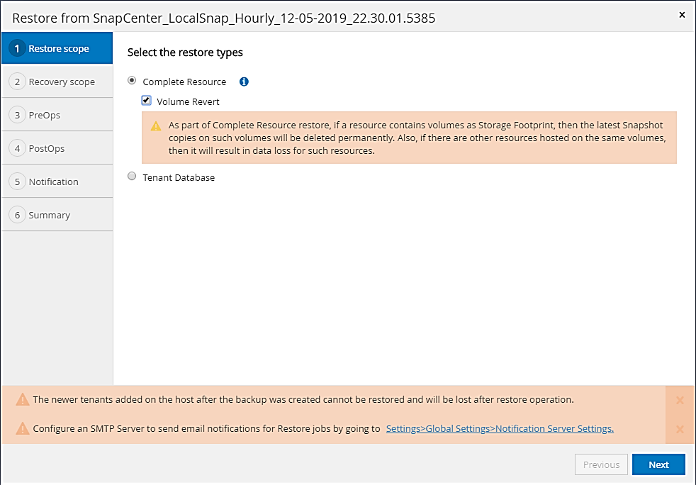
The restore type options for restore from offsite backup storage.
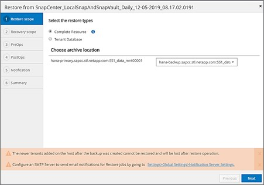
The restore type options for restore from primary storage with Fibre Channel SAN.

-
Select Recovery Scope and provide the location for log backup and catalog backup.
SnapCenter uses the default path or the changed paths in the HANA global.ini file to pre-populate the log and catalog backup locations. 
-
Enter the optional prerestore commands.

-
Enter the optional post-restore commands.

-
Enter the optional email settings.

-
To start the restore operation, click Finish.

-
SnapCenter executes the restore and recovery operation. This example shows the job details of the restore and recovery job.

Single-tenant restore and recovery operation
With SnapCenter 4.3, single-tenant restore operations are supported for HANA MDC systems with a single tenant or with multiple tenants that have been auto- discovered by SnapCenter.
You can perform a single-tenant restore and recovery operation with the following steps:
-
Stop the tenant to be restored and recovered.
-
Restore the tenant with SnapCenter.
-
For a restore from primary storage, SnapCenter executes the following operations:
-
NFS. Storage Single File SnapRestore operations for all files of the tenant database.
-
SAN. Clone and connect the LUN to the database host, and copy all files of the tenant database.
-
-
For a restore from secondary storage, SnapCenter executes the following operations:
-
NFS. Storage SnapVault Restore operations for all files of the tenant database
-
SAN. Clone and connect the LUN to the database host, and copy all files of the tenant database
-
-
-
Recover the tenant with HANA Studio, Cockpit, or SQL statement.
This section provides the steps for the restore and recovery operation from the primary storage of the auto-discovered HANA system SM1 (SAP HANA single-host, MDC multiple-tenant system using NFS). From the user input perspective, the workflows are identical for a restore from secondary or a restore in a Fibre Channel SAN setup.
-
Stop the tenant database.
sm1adm@hana-2:/usr/sap/SM1/HDB00> hdbsql -U SYSKEY Welcome to the SAP HANA Database interactive terminal. Type: \h for help with commands \q to quit hdbsql=> hdbsql SYSTEMDB=> alter system stop database tenant2; 0 rows affected (overall time 14.215281 sec; server time 14.212629 sec) hdbsql SYSTEMDB=> -
Select a backup in SnapCenter to be used for the restore operation.

-
Select the tenant to be restored.
SnapCenter shows a list of all tenants that are included in the selected backup. 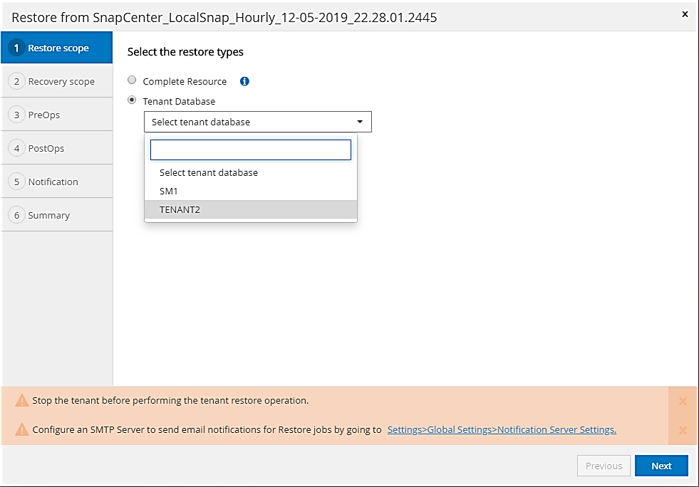
Single-tenant recovery is not supported with SnapCenter 4.3. No Recovery is preselected and cannot be changed.

-
Enter the optional prerestore commands.

-
Enter optional post-restore commands.
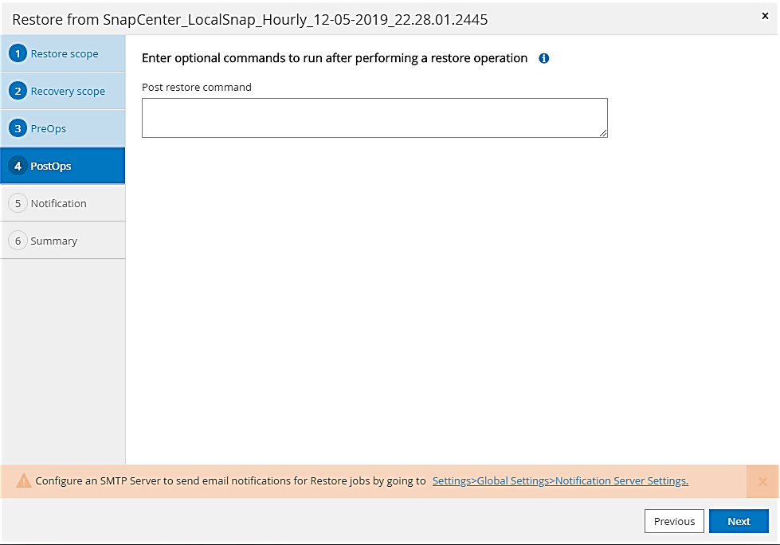
-
Enter the optional email settings.

-
To start the restore operation, click Finish.

The restore operation is executed by SnapCenter. This example shows the job details of the restore job.

When the tenant restore operation is finished, only the tenant relevant data is restored. On the file system of the HANA database host, the restored data file and the Snapshot backup ID file of the tenant is available. sm1adm@hana-2:/usr/sap/SM1/HDB00> ls -al /hana/data/SM1/mnt00001/* -rw-r--r-- 1 sm1adm sapsys 17 Dec 6 04:01 /hana/data/SM1/mnt00001/nameserver.lck /hana/data/SM1/mnt00001/hdb00001: total 3417776 drwxr-x--- 2 sm1adm sapsys 4096 Dec 6 01:14 . drwxr-x--- 6 sm1adm sapsys 4096 Nov 20 09:35 .. -rw-r----- 1 sm1adm sapsys 3758096384 Dec 6 03:59 datavolume_0000.dat -rw-r----- 1 sm1adm sapsys 0 Nov 20 08:36 __DO_NOT_TOUCH_FILES_IN_THIS_DIRECTORY__ -rw-r----- 1 sm1adm sapsys 36 Nov 20 08:37 landscape.id /hana/data/SM1/mnt00001/hdb00002.00003: total 67772 drwxr-xr-- 2 sm1adm sapsys 4096 Nov 20 08:37 . drwxr-x--- 6 sm1adm sapsys 4096 Nov 20 09:35 .. -rw-r--r-- 1 sm1adm sapsys 201441280 Dec 6 03:59 datavolume_0000.dat -rw-r--r-- 1 sm1adm sapsys 0 Nov 20 08:37 __DO_NOT_TOUCH_FILES_IN_THIS_DIRECTORY__ /hana/data/SM1/mnt00001/hdb00002.00004: total 3411836 drwxr-xr-- 2 sm1adm sapsys 4096 Dec 6 03:57 . drwxr-x--- 6 sm1adm sapsys 4096 Nov 20 09:35 .. -rw-r--r-- 1 sm1adm sapsys 3758096384 Dec 6 01:14 datavolume_0000.dat -rw-r--r-- 1 sm1adm sapsys 0 Nov 20 09:35 __DO_NOT_TOUCH_FILES_IN_THIS_DIRECTORY__ -rw-r----- 1 sm1adm sapsys 155648 Dec 6 01:14 snapshot_databackup_0_1 /hana/data/SM1/mnt00001/hdb00003.00003: total 3364216 drwxr-xr-- 2 sm1adm sapsys 4096 Dec 6 01:14 . drwxr-x--- 6 sm1adm sapsys 4096 Nov 20 09:35 .. -rw-r--r-- 1 sm1adm sapsys 3758096384 Dec 6 03:59 datavolume_0000.dat -rw-r--r-- 1 sm1adm sapsys 0 Nov 20 08:37 __DO_NOT_TOUCH_FILES_IN_THIS_DIRECTORY__ sm1adm@hana-2:/usr/sap/SM1/HDB00>
-
Start the recovery with HANA Studio.

-
Select the tenant.
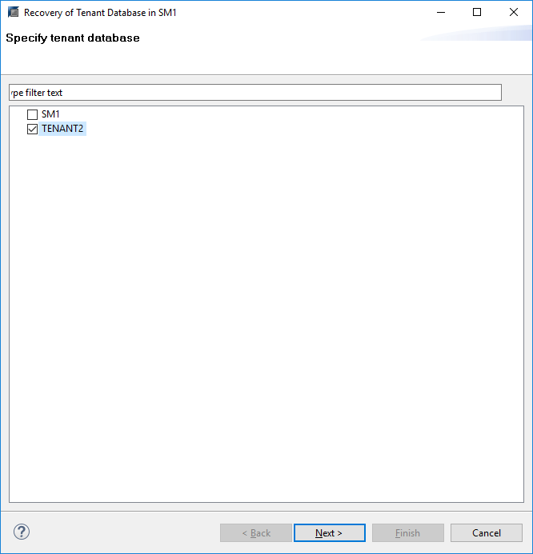
-
Select the recovery type.
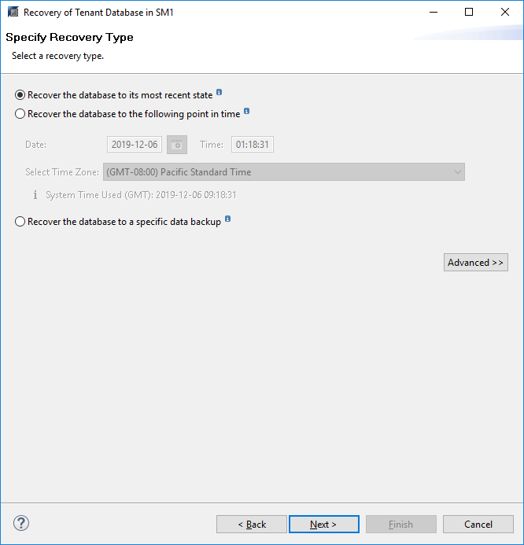
-
Provide the backup catalog location.


Within the backup catalog, the restored backup is highlighted with a green icon. The external backup ID shows the backup name that was previously selected in SnapCenter.
-
Select the entry with the green icon and click Next.
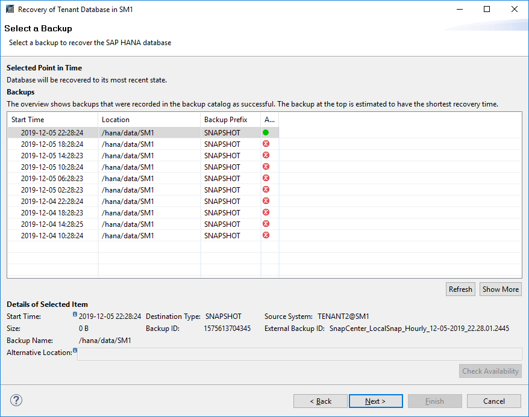
-
Provide the log backup location.
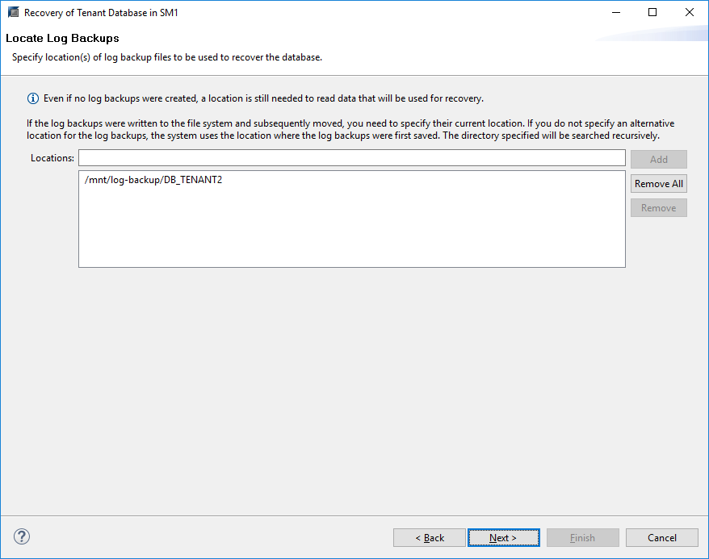
-
Select the other settings as required.
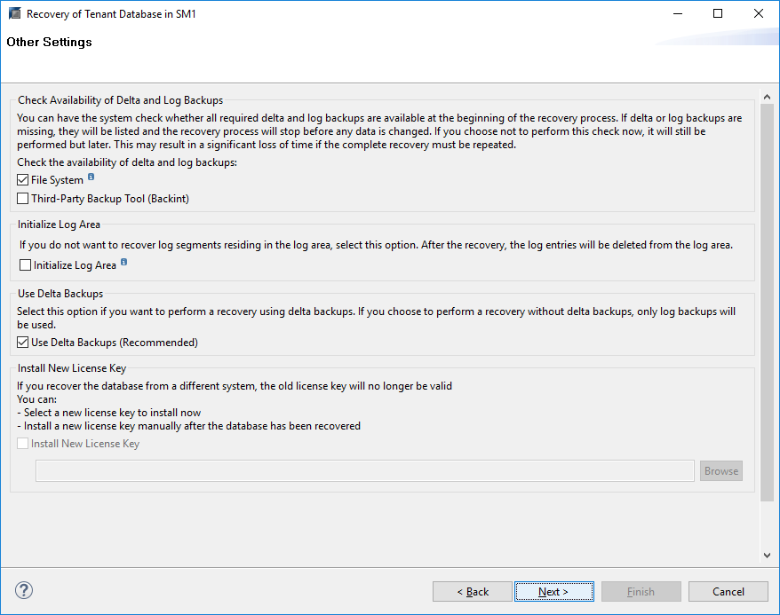
-
Start the tenant recovery operation.


Restore with manual recovery
To restore and recover an SAP HANA MDC single-tenant system using SAP HANA Studio and SnapCenter, complete the following steps:
-
Prepare the restore and recovery process with SAP HANA Studio:
-
Select Recover System Database and confirm shutdown of the SAP HANA system.
-
Select the recovery type and the log backup location.
-
The list of data backups is shown. Select Backup to see the external backup ID.
-
-
Perform the restore process with SnapCenter:
-
In the topology view of the resource, select Local Copies to restore from primary storage or Vault Copies if you want to restore from an off-site backup storage.
-
Select the SnapCenter backup that matches the external backup ID or comment field from SAP HANA Studio.
-
Start the restore process.
If a volume-based restore from primary storage is chosen, the data volumes must be unmounted from all SAP HANA database hosts before the restore and mounted again after the restore process is finished.
In an SAP HANA multiple-host setup with FC, the unmount and mount operations are executed by the SAP HANA name server as part of the shutdown and startup process of the database.
-
-
Run the recovery process for the system database with SAP HANA Studio:
-
Click Refresh from the backup list and select the available backup for recovery (indicated with a green icon).
-
Start the recovery process. After the recovery process is finished, the system database is started.
-
-
Run the recovery process for the tenant database with SAP HANA Studio:
-
Select Recover Tenant Database and select the tenant to be recovered.
-
Select the recovery type and the log backup location.
A list of data backups displays. Because the data volume has already been restored, the tenant backup is indicated as available (in green).
-
Select this backup and start the recovery process. After the recovery process is finished, the tenant database is started automatically.
-
The following section describes the steps of the restore and recovery operations of the manually configured HANA system SS2 (SAP HANA single host, MDC multiple tenant system using NFS).
-
In SAP HANA Studio, select the Recover System Database option to start the recovery of the system database.

-
Click OK to shut down the SAP HANA database.

The SAP HANA system shuts down and the recovery wizard is started.
-
Select the recovery type and click Next.

-
Provide the location of the backup catalog and click Next.
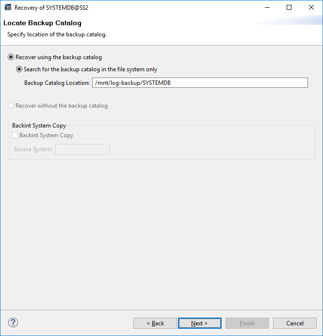
-
A list of available backups displays based on the content of the backup catalog. Choose the required backup and note the external backup ID: in our example, the most recent backup.
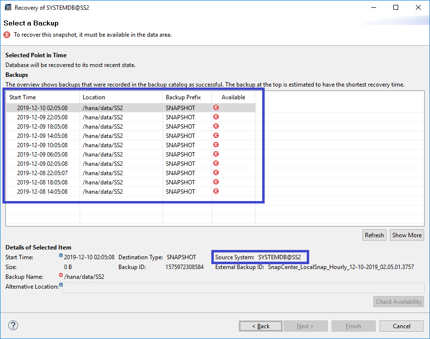
-
Unmount all data volumes.
umount /hana/data/SS2/mnt00001
For an SAP HANA multiple host system with NFS, all data volumes on each host must be unmounted.
In an SAP HANA multiple-host setup with FC, the unmount operation is executed by the SAP HANA name server as a part of the shutdown process. -
From the SnapCenter GUI, select the resource topology view and select the backup that should be restored; in our example, the most recent primary backup. Click the Restore icon to start the restore.

The SnapCenter restore wizard starts.
-
Select the restore type Complete Resource or File Level.
Select Complete Resource to use a volume-based restore.
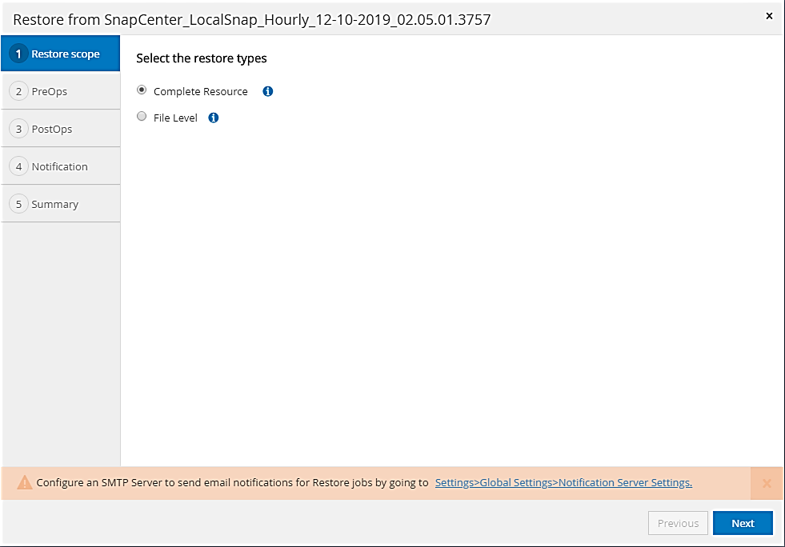
-
Select File Level and All to use a single-file SnapRestore operation for all files.

For a file-level restore of a SAP HANA multiple host system, select all the volumes. 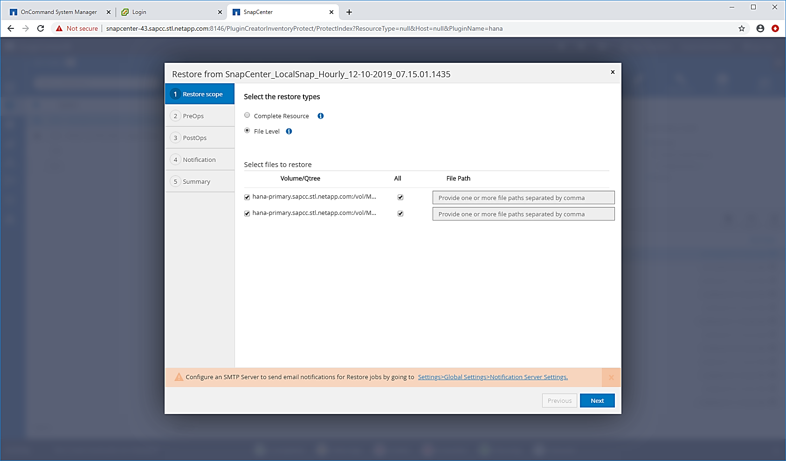
-
(Optional) Specify the commands that should be executed from the SAP HANA plug-in running on the central HANA plug-in host. Click Next.
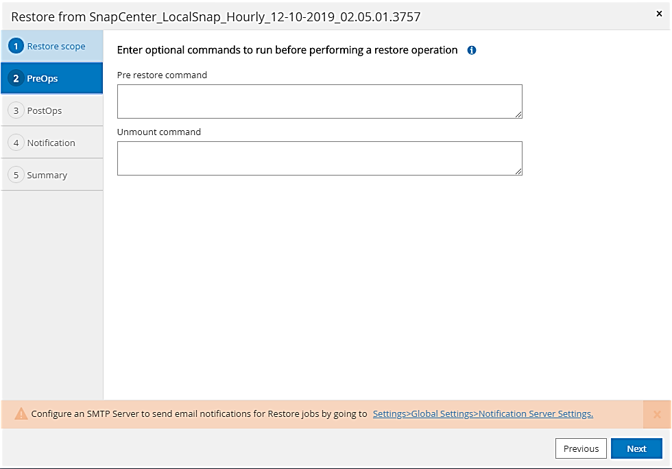
-
Specify the optional commands and click Next.

-
Specify the notification settings so that SnapCenter can send a status email and job log. Click Next.
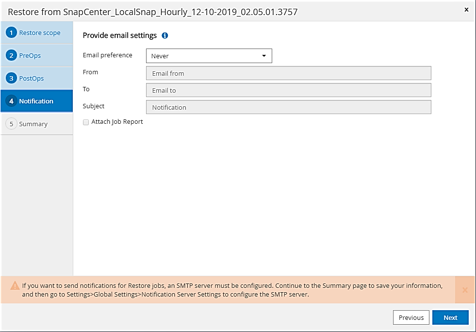
-
Review the summary and click Finish to start the restore.

-
The restore job starts, and the job log can be displayed by double-clicking the log line in the activity pane.
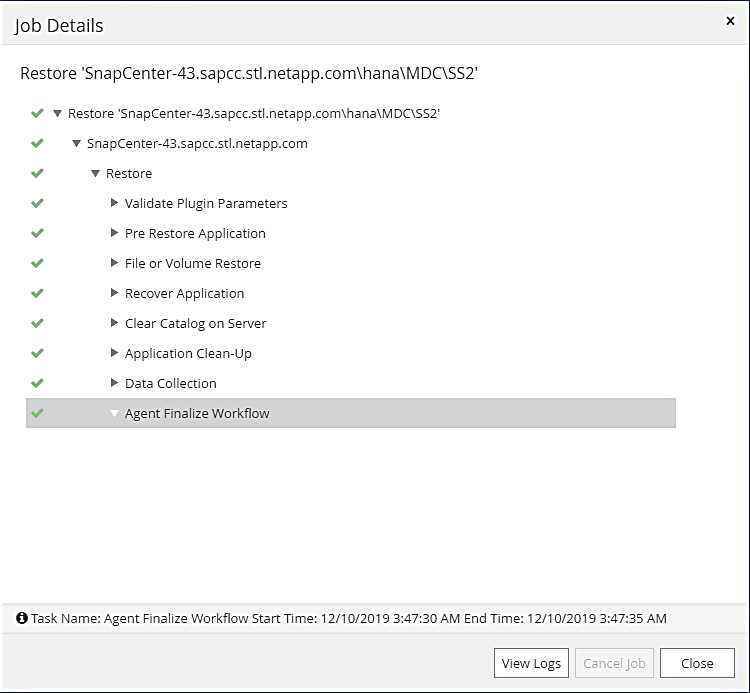
-
Wait until the restore process completes. On each database host, mount all data volumes. In our example, only one volume must be remounted on the database host.
mount /hana/data/SP1/mnt00001
-
Go to SAP HANA Studio and click Refresh to update the list of available backups. The backup that was restored with SnapCenter is shown with a green icon in the list of backups. Select the backup and click Next.

-
Provide the location of the log backups. Click Next.

-
Select other settings as required. Make sure Use Delta Backups is not selected. Click Next.
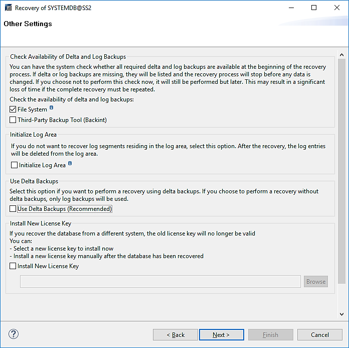
-
Review the recovery settings and click Finish.
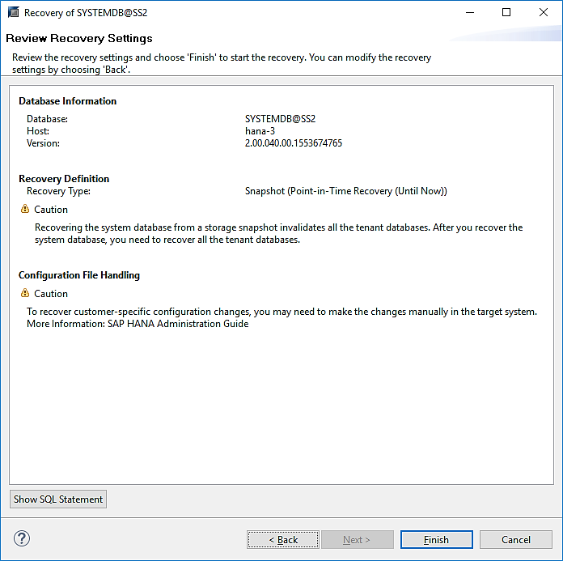
-
The recovery process starts. Wait until the recovery of the system database completes.

-
In SAP HANA Studio, select the entry for the system database and start Backup Recovery - Recover Tenant Database.
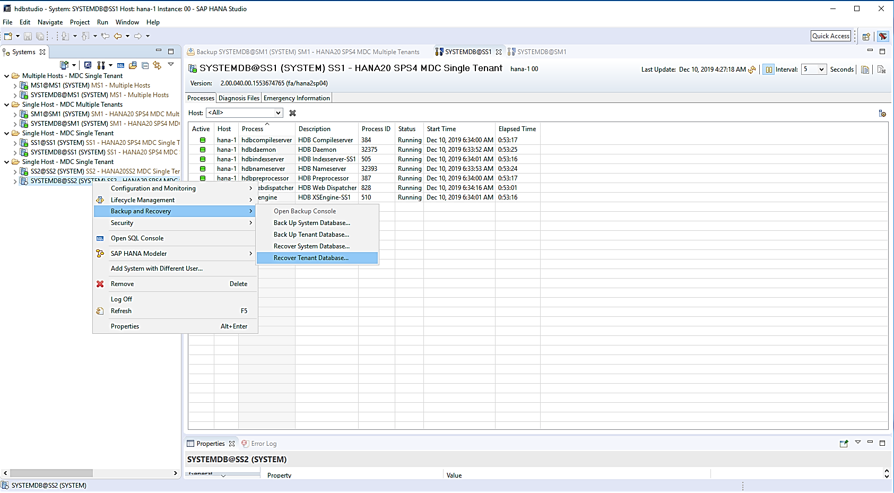
-
Select the tenant to recover and click Next.

-
Specify the recovery type and click Next.

-
Confirm the backup catalog location and click Next.

-
Confirm that the tenant database is offline. Click OK to continue.
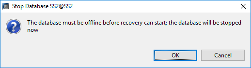
-
Because the restore of the data volume has occurred before the recovery of the system database, the tenant backup is immediately available. Select the backup highlighted in green and click Next.

-
Confirm the log backup location and click Next.

-
Select other settings as required. Make sure Use Delta Backups is not selected. Click Next.

-
Review the recovery settings and start the recovery process of the tenant database by clicking Finish.

-
Wait until the recovery has finished and the tenant database is started.

The SAP HANA system is up and running.
For an SAP HANA MDC system with multiple tenants, you must repeat steps 20–29 for each tenant.